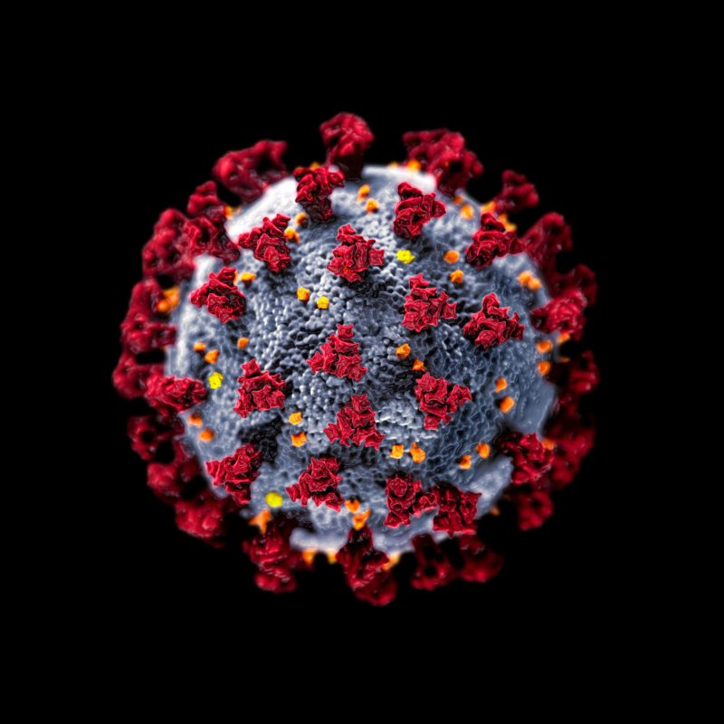
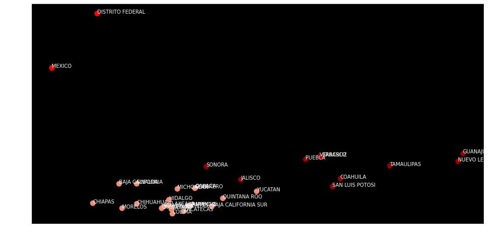
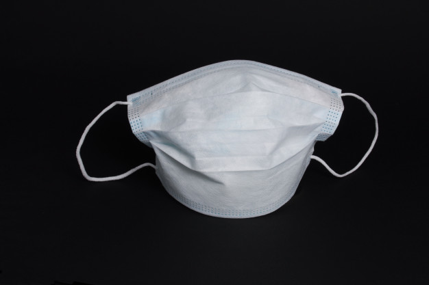
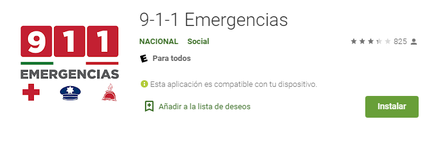
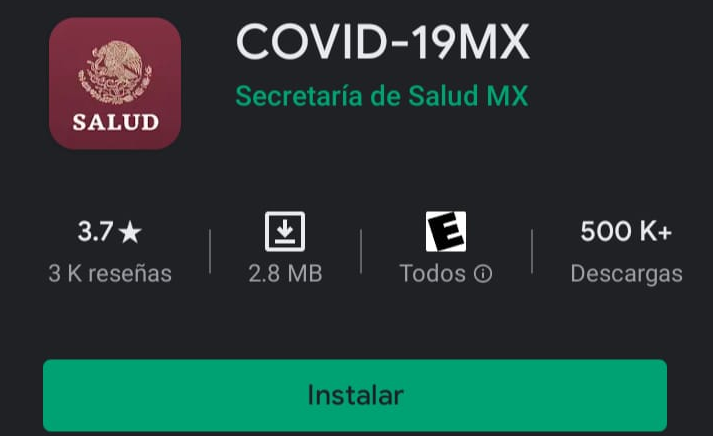

A la fecha, México ha sido afectado por la presencia del virus SARS-CoV-2. La pandemia ha expuesto problemas preexistentes y se deben tomar medidas para superarla, entre ellas está poner énfasis en la salud mental de la población. ¿Cómo ha afectado la pandemia la salud mental de la población que contrajo la enfermedad COVID-19?
Estado actual del país respecto al virus COVID-19.-
Mapa 1: Regiones Mexicanas clasificadas por casos diarios confirmados.

Número de casos totales hasta el momento: 460, 111
coronavirus.gob.mx
Número de casos recuperados: 288,076 de 21 Estados,
excluyendo a: Aguascalientes, Baja California, Baja
California Sur, Campeche, Coahuila de Zaragoza,Colima,
Chiapas, Chihuahua, Distrito Federal y Zacatecas
SINAVE (2020)
Número de casos totales hasta el momento: 460, 111
coronavirus.gob.mx
Número de casos recuperados: 288,076 de 21 Estados, excluyendo a: Aguascalientes, Baja California, Baja California Sur, Campeche, Coahuila de Zaragoza,Colima, Chiapas, Chihuahua, Distrito Federal y Zacatecas
SINAVE (2020)
¿Por qué dividimos la República así?
Para unir las regiones del país por contagios y por recuperados, usamos dos técnicas, la de análisis de componentes principales (PCA) y el uso de Machine Learning para ver a qué grupo o “clúster” pertenece cada estado. Para ello, podemos utilizar el método de la curva del codo, que consiste en la suma de errores cuadrado en cada grupo para todos los datos que necesitemos, midiendo la distancia usando una métrica euclidiana; para esto, se busca en dónde se dibuja una curva o un "codo" y eso nos indica cuántos clusters debemos usar.
Análisis de Componentes Principales.

Curva Epidémica
Se tomarán los criterios de recuperados de Coronavirus de los tres estados Estado de Mexico, CDMX y Guanajuato, haciendo la comparación con el tiempo en el que se dio el alta.
¿Qué es la curva epidémica?
Según la doctora Michele Torok, una curva epidémica es una representación gráfica del número de casos de acuerdo a la fecha de la aparición de la enfermedad. Torok (s.f.).
¿Cuál es la diferencia entre brote y epidemia?
Referente a los casos de una enfermedad, son muy similares, ya que un brote es una enfermedad que aparece donde no es común que aparezca, mientras que una epidemia es una enfermedad que ataca a un cierto número de personas en un tiempo determinado.
Curvas epidémicas por casos diarios a nivel nacional, Estado de México, CDMX y Guanajuato:
Repercusiones En La Salud Mental: Ansiedad
México como un país en vías de desarrollo ha sido uno de los más afectados por la pandemia, la población se ha visto expuesta a estrés sin precedentes, dificultades económicas incrementadas a las ya sufridas antes de la pandemia, miedo a un virus desconocido y la incertidumbre del sistema de salud, todo esto ha contribuido con el aumento gradual del portafolio de riesgo individual para presentar alteraciones psicológicas; si bien la salud mental no está entre las primeras bases para la sociedad, es de suma importancia realizar medidas preventivas para estas.
Un ejemplo claro es la ansiedad que es un trastorno de la conducta caracterizado por aumento de la tensión muscular e hiperactividad autónoma, afecta negativamente el funcionamiento psicosocial del individuo casi a diario; la causa exacta es incierta pero se asocia con el estrés derivado de la pérdida emocional y situaciones peligrosas.
Se presenta rara vez antes de la adolescencia; la prevalencia en la población adolescente es de 0,9%, entre adultos 2,9% es decir 3 veces mayor que en adolescentes (en Estados Unidos), ahora es dos veces más común en mujeres que en hombres, las poblaciones blancas tienen más probabilidades de verse afectadas que las de etnia africana, asiática o hispana, aunque se debe tomar en cuenta que todos estos factores se vieron incrementados por la cuarentena. (Gennaro, 2020)
Tasa de Ataque
Tasa de ataque específica: número de casos con enfermedad mental entre número total de la población que padece covid y este resultado multiplicado por 100.
Ejemplo: Estado de México.-
Tasa de ataque= [población expuesta (3,850)] / total de casos recuperados (9,167)] x 100 = 42%. Así, la tasa de ataque de la ansiedad para personas recuperadas con coronavirus en Estado de México es del 42%. (Gennaro, 2020)
Impacto de la Crisis Sanitaria
Las epidemias y las enfermedades hacen que las debilidades de los sistemas económicos, de salud y los estilos de vida de las personas salgan a la luz, revelando la fragilidad humana.
Expandida por el mundo, la pandemia del Coronavirus incrementa más las cifras de casos contagiados y personas fallecidas, afectando también a nuestro país. Sus consecuencias han extrapolado el ámbito sanitario, provocando transformaciones en las relaciones interpersonales, vida cotidiana. política y psicológicamente.
“Es probable que una consecuencia adversa importante de la pandemia de Covid-19 sea el aumento del aislamiento social y la soledad (como se refleja en nuestras encuestas), que están fuertemente asociados con ansiedad, depresión, autolesiones e intentos de suicidio a lo largo de la vida”.
Podemos asumir que para la población en general ha sido una experiencia bastante compleja debido a que el encierro tiende a ser difícil puesto que se dan elementos negativos como el miedo y la ansiedad.
Hablando de otro tipo de repercusiones, sectores dentro de la economía mexicana comienzan a divisar deterioros desde los primeros meses de la pandemia, los datos muestran que la caída en el empleo, en la recaudación tributaria y en las ganancias de empresas conllevarán al comienzo de una crisis económica rápida y profunda; sumando a ello el pronósticos de la pérdida de empleos para este año en México, de acuerdo con asociaciones empresariales y la organización de reclutamiento internacional Manpower Group, se han perdido de 1.2 a 2 millones de empleos. También, cabe mencionar que se dió a conocer que el impacto de la pandemia por coronavirus provocará la peor crisis que ha sufrido América Latina desde 1914 y 1930, la Comisión Económica para América Latina y el Caribe (Cepal) estima que la economía mexicana estará entre las más afectadas, con una caída de 6.5% del PIB al cierre de este año.
También, el coronavirus está cambiando instantáneamente la forma en que se imparte la educación, ya que la escuela y el hogar, ahora se convierten en el mismo lugar tras las necesarias regulaciones efectuadas. Según la UNESCO, más de 861.7 millones de niños y jóvenes en 119 países se han visto afectados al tener que hacer frente a la pandemia global que nos ha sacudido este año. Millones de familias en EE.UU. se han tenido que unir al 1.7 millón de niños que se encuentran enrolados en la educación en el hogar (homeschooling). Al igual que en México, donde la Secretaría de Educación Pública (SEP) ha extendido el período vacacional desde el 23 de marzo al 17 de abril del 2020.
A estas alturas de la pandemia, nadie duda de los efectos psicológicos y sociales directos e indirectos de la enfermedad en la mayoría de la población y es por ello que se deben tomar medidas preventivas de la misma, en este artículo hemos visto una aproximación de cómo puede llegar a afectar una sola comparecencia mental, más hay un sin fin de enfermedades mentales que afectan a la población en el dia a dia. Es necesario tener presente las actitudes y actividades que podemos tomar para la prevención de las mismas, entre ellas está escuchar música y géneros novedosos, descubrir galerías y museos virtuales en Google Culture and Arts hasta aprender habilidades completamente nuevas como un nuevo idioma o tocar algún instrumento, seguir rutinas establecidas y procurar hacer cosas nuevas o que puedan mantener nuestra mente ocupada también son de gran ayuda.
Cabe mencionar que el paso más difícil cuando se está lidiando con problemas de salud mental es pedir ayuda y admitir que se tiene un problema. Por más que se procure darle a nuestra mente los mejores cuidados, hay una probabilidad de caer en ansiedad a causa de las diversas repercusiones que puede llegar a tener la pandemia; por eso, recomendamos ampliamente las siguientes opciones para pedir ayuda en caso de que se presente alguna emergencia de salud mental:
International Bipolar Foundation
(Mexican Suicide Hotline)
Teléfono: 525-510-2550
Alumbra: Chat en Línea con
Psicólogos Expertos
Sitio web: alumbramx.org/ayuda/
Servicio de Intervención de Crisis Emocionales
(En Jalisco y en toda la república mexicana)
Teléfono: 01800 227-4747
SAPTEL (Servicio Médico de Salud Mental)
Teléfono: 01800 472-7835
International Bipolar Foundation (Mexican Suicide Hotline)
Teléfono: 525-510-2550
Alumbra: Chat en Línea con Psicólogos Expertos
Sitio web: alumbramx.org/ayuda/
Servicio de Intervención de Crisis Emocionales (En Jalisco y en toda la república mexicana)
Teléfono: 01800 227-4747
SAPTEL (Servicio Médico de Salud Mental)
Teléfono: 01800 472-7835
También, recomendamos los siguientes servicios médicos en caso de tener o conocer algún caso sospechoso de COVID-19 o alguna otra emergencia médica:


Aplicación y Teléfono Oficial de Emergencias
Locatel-Rastreo de casos de COVID-19
Teléfono: 55 5484-0400
Cruz Roja Mexicana
Teléfono: 55 1084 9000

Aplicación de COVID-19 de la
Secretaría de Salud de México
Aplicación y Teléfono Oficial de Emergencias
Locatel-Rastreo de casos de COVID-19
Teléfono: 55 5484-0400
Cruz Roja Mexicana
Teléfono: 55 1084 9000
Aplicación de COVID-19 de la Secretaría de Salud de México